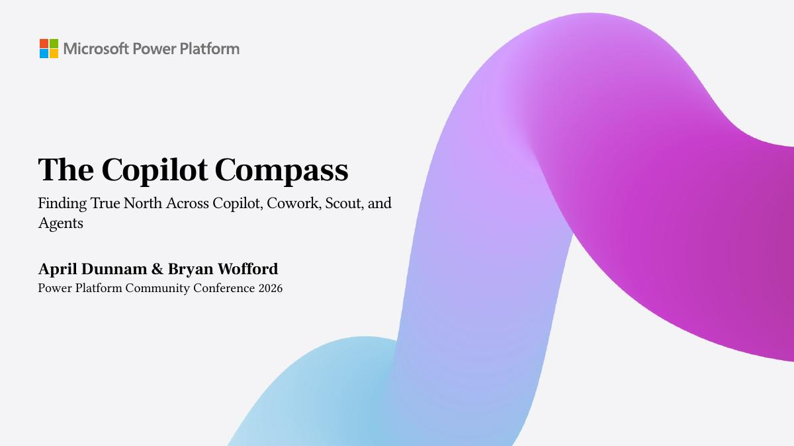
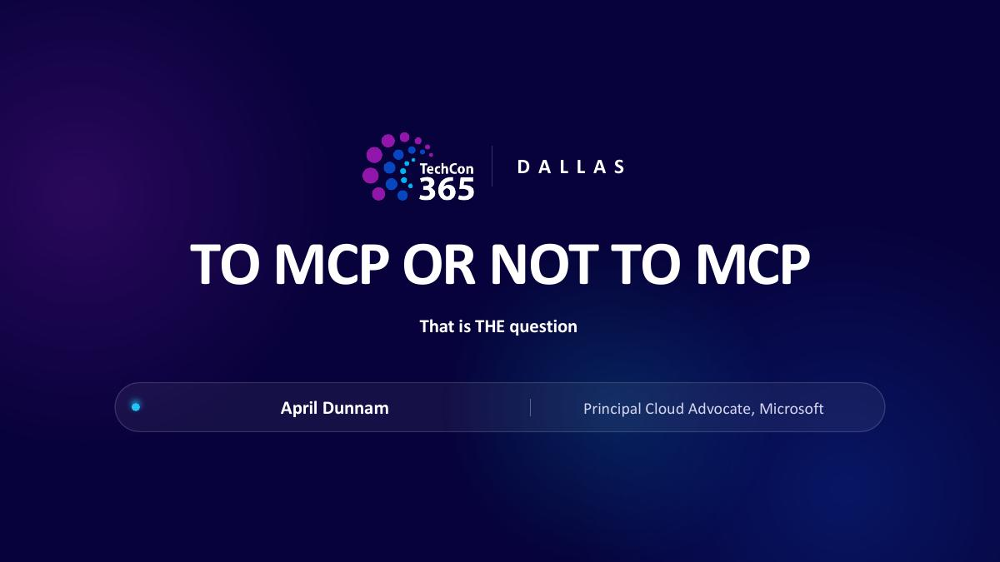
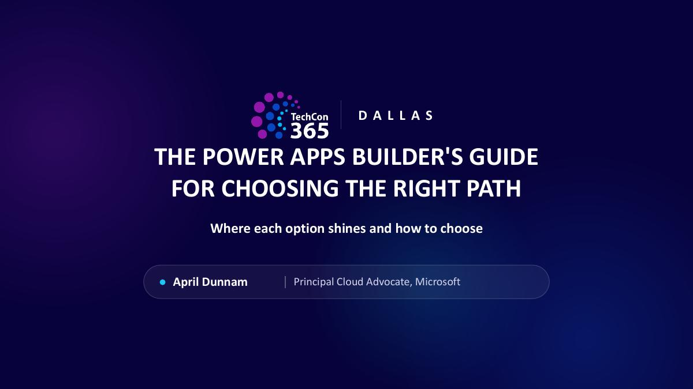
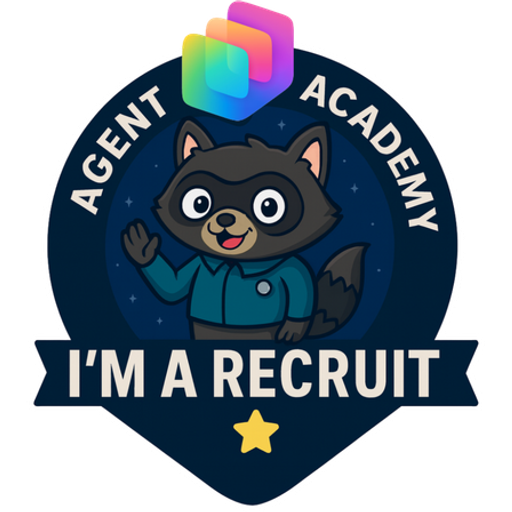

The Copilot Compass
A four-direction framework for choosing between Chat, Cowork, monitoring, and building with Code or agents. Presented with Bryan Wofford.
PowerPoint · PDF · Session guide
Get the slides & guideI teach people how to use Microsoft Copilot and build agents with Copilot Studio. Here you'll find my demos, guides, and lessons from 10+ years working with SharePoint, Microsoft 365, and Power Platform.
Slides, demos, and the details that didn't fit on stage.
Slides, demos, and notes from my recent Copilot sessions.

A four-direction framework for choosing between Chat, Cowork, monitoring, and building with Code or agents. Presented with Bryan Wofford.
PowerPoint · PDF · Session guide
Get the slides & guide
Learn what MCP is through a kitchen analogy, with examples in Copilot Studio, Cowork, and GitHub Copilot.
Slides · Practical guide
Get the slides & guide
Watch the Dallas demos: meeting prep, inbox triage, skills, automations, Projects, Miro, and browser use. Includes slides and copyable prompts.
Slides · 6 demo videos · Copyable prompts
Get the materials
Compare canvas, model-driven, generative pages, code apps, and apps in Copilot. Try the three-question guide to narrow down your options.
Slides · Interactive guide
Get the slides & guideCopy a prompt, watch a demo, or download something for your own work.
Use your connected work data, replace the bracketed details, and review the results before sharing.
Prep me for my [time] meeting: check the invite, pull attendee context, find related emails and docs, and give me a briefing.Turn this meeting transcript into decisions, action items with owners, and follow-up emails.Take [document/deck] and turn the key points into a [1-pager / email / FAQ].Silent screen recordings, with written walkthroughs and prompts.
Watch Cowork build a briefing from work context, save a Word document, and ask for approval before sending.
Watch approval cards, a mid-task change, and updates to an existing Excel tracker.
Talks, demos & workshops
See where I'm speaking next, or browse earlier events.
14 events in 2026
In person
Select a pin or city to see its events.
No upcoming dates are listed. Choose Past events to see earlier appearances.
Copilot Studio demo
Event details (opens in a new tab) ↗–
Copilots, Autopilots, Apps & Agents
2026 agenda (opens in a new tab) ↗Copilot Studio session
Organizer announcement (opens in a new tab) ↗–
Agent Academy Live Workshop
Workshop details (opens in a new tab) ↗Livestream with Jack Rowbotham
Livestream details (opens in a new tab) ↗–
–
–
–
–
I help build and maintain Agent Academy: free, hands-on labs for Copilot Studio, including the GitHub Copilot harness. You can follow the labs at your own pace.

Watch me work through Copilot features, agent builds, and Power Platform examples.
Loading latest videos…
I wrote this book to help you choose a Copilot, agent, bot, or workflow for the task you have in mind. It explains the Microsoft 365 Copilot options for business users, developers, and Power Platform makers.
Microsoft 365 Copilot and Cowork, Copilot Studio, GitHub Copilot, and Power Platform. Tell me what your team wants to learn.